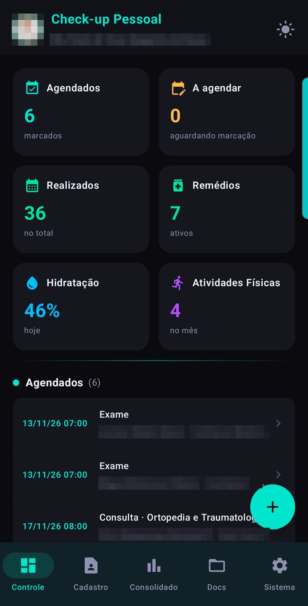
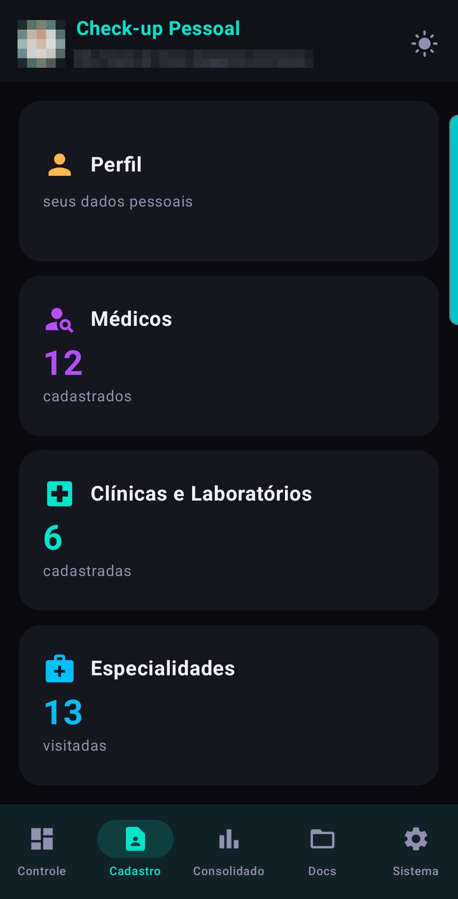
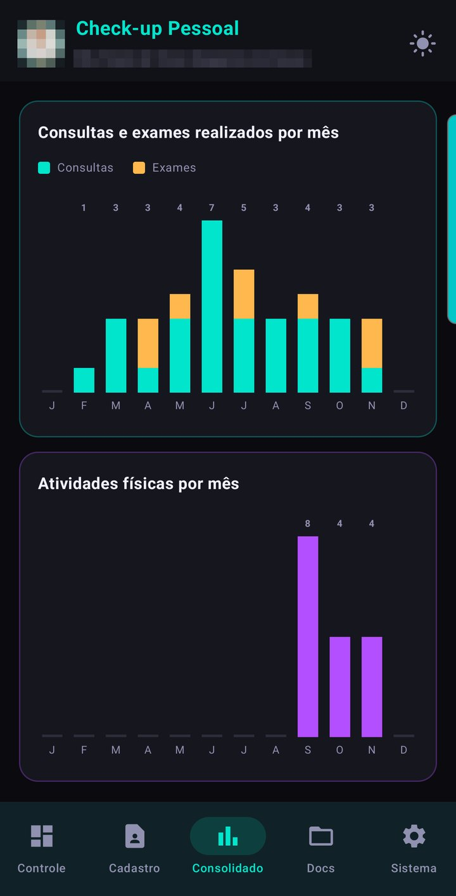
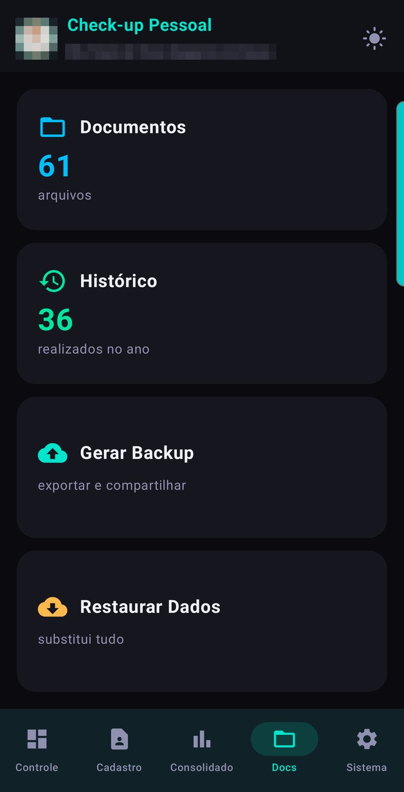
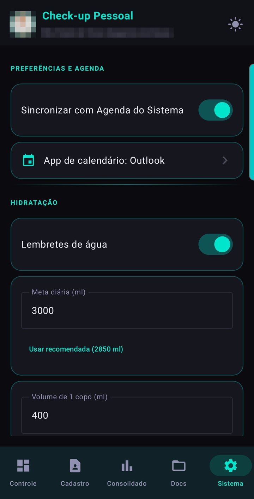
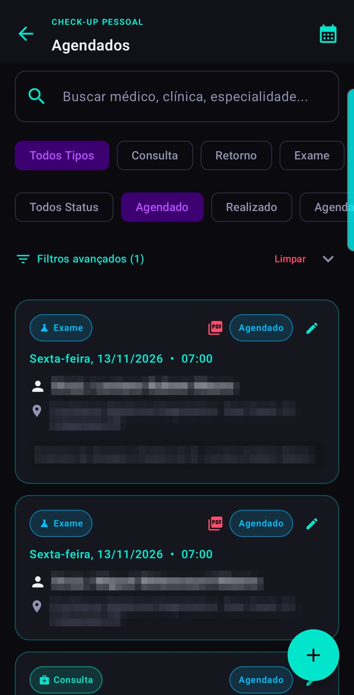
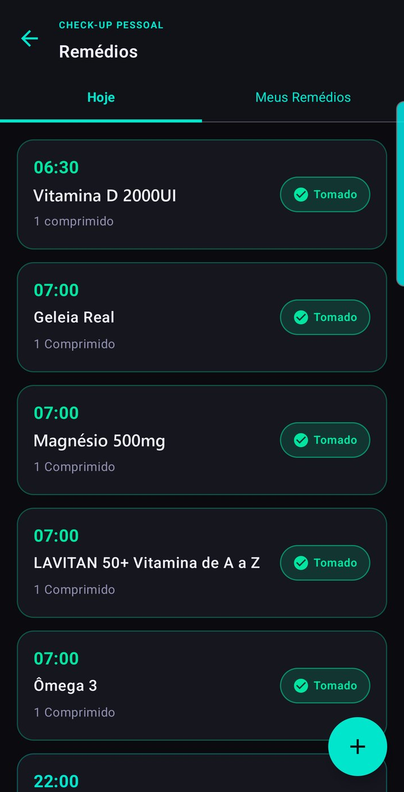

2ª fase de testes
O que aconteceu na 1ª fase, o que mudou no aplicativo e como você pode ajudar a levá-lo à Play Store.
14 dias · uso real · seu retorno
A 1ª fase, e o que o Google respondeu
- SetembroConvite aos cadastrados. Mais de 12 pessoas instalaram pela Play Store.
- Setembro → outubro14 dias de teste fechado, com duas atualizações no período (1.9.7 e 1.9.8).
- 2 de outubroPedido de liberação para a Play Store.
- 5 de outubroResposta do Google: ainda não. Mais 14 dias de teste.
- AgoraVersão 1.9.10 no ar para os testadores. Começa a 2ª fase.
O Google não quer só ver o aplicativo instalado. Quer ver que as pessoas usam de verdade e dão retorno, e que o aplicativo melhora com esse retorno.
Usar por 14 dias e me contar o que achou
1. Atualize
Instale a versão 1.9.10 pela Play Store. Atualizar não apaga seus dados.
2. Use de verdade
Seus compromissos, remédios e água. Não precisa ser tudo: o que fizer sentido para você.
3. Dê retorno
Uma frase basta: o que foi fácil, onde travou, o que mudaria.
Cada retorno vira melhoria, e é isso que o Google avalia para liberar a loja. Mantenha o aplicativo instalado durante os 14 dias.
Como atualizar para a versão 1.9.10
- No celular, abra a Play Store e toque na sua foto, no canto de cima.
- Toque em Gerenciar apps e dispositivo → Atualizações disponíveis.
- Encontre CheckupPessoal e toque em Atualizar.
- Para conferir: aba Sistema → quadro Sobre, no fim da tela → deve mostrar v1.9.10.
Não apareceu a atualização? Abra este link no celular e toque em Baixar no Google Play ou Atualizar:
play.google.com/apps/testing/com.checkuppessoal.appUse a mesma conta Google do celular. Se você tinha desinstalado, o caminho é o mesmo: “Tornar-se um testador” e depois instalar.
Instalou pelo site, e não pela Play Store? Essa instalação funciona, mas não conta para o Google, e a Play Store não consegue atualizá-la. Para trocar sem perder nada:
- Aba Docs → Gerar Backup. Guarde o arquivo (Drive, e-mail…).
- Desinstale o CheckupPessoal.
- Instale pelo link do teste, acima, na Play Store.
- Aba Docs → Restaurar Dados → escolha o arquivo do backup.
Na dúvida, me chame antes de desinstalar. Faço o passo a passo com você.
Nova tela inicial: cinco abas no rodapé
Tudo a um toque. O ícone aceso mostra em que aba você está.
Controle
O dia a dia: agendados, a agendar, realizados, remédios, água e atividades. Abaixo, os lembretes.
Cadastro
Perfil, Médicos, Clínicas e Laboratórios, Especialidades.
Consolidado
Os gráficos do ano: consultas, exames e atividades físicas por mês.
Docs
Documentos, Histórico, Gerar Backup e Restaurar Dados.
Sistema
As configurações, direto. No fim, o quadro Sobre, com a versão.
Cada tela aberta por um quadro tem o mesmo nome do quadro, e a seta no alto leva de volta.
O seu dia a dia numa tela só
- Agendados e A agendar: o que está marcado e o que falta marcar.
- Realizados: o que você já fez. Substituiu o antigo quadro “Agenda”.
- Remédios, Hidratação e Atividades Físicas.
- Abaixo dos quadros, uma linha por compromisso pendente. Os atrasados aparecem primeiro, em vermelho. Toque para abrir.
- Botão + para um compromisso novo.
Quadros grandes, fáceis de tocar
- Perfil é o primeiro quadro do Cadastro: seus dados, peso e gênero (usados na meta de água).
- Médicos, Clínicas e Laboratórios e Especialidades, um por linha, com letra maior.
- No Consolidado, os gráficos ocupam a tela toda: consultas e exames (cores separadas) e atividades físicas por mês.




Documentos e segurança dos seus dados
- Docs reúne Documentos, Histórico e o backup: Gerar Backup e Restaurar Dados.
- Restaurar substitui tudo e sempre pede confirmação antes.
- Sistema abre direto nas configurações: agenda, lembretes de água, alertas, atividades e segurança (PIN e biometria).
- No fim do Sistema, o quadro Sobre mostra a versão e o histórico de novidades.
Tocou no quadro, abriu a lista certa
- A tela tem o nome do quadro: Agendados, A agendar, Realizados, Remédios, Atividades Físicas…
- Agendados e A agendar: do mais próximo de hoje para o mais distante, com os atrasados no topo.
- Realizados: do mais recente para o mais antigo.
- A seta no alto, à esquerda, volta para a aba de onde você veio.


Cinco coisas para experimentar
- Cadastro → Médicos: cadastre um médico seu. Depois, no Controle, toque em + e marque uma consulta ou exame.
- Quando o compromisso acontecer, abra e marque como Realizado. Se quiser, anexe a receita ou o resultado.
- Remédios: cadastre um remédio ou vitamina e use o botão Tomar nos horários.
- Hidratação: registre os copos de água do dia.
- Docs → Gerar Backup: guarde uma cópia dos seus dados.
Três perguntas, uma frase cada
O que foi fácil?
Onde você travou?
O que você mudaria?
Responda pelo WhatsApp, pelo e-mail do convite ou escreva para ptgsouza@hotmail.com.
Obrigado por fazer parte disso. Falta pouco para o CheckupPessoal estar na Play Store para todo mundo.
— Paulo de Tarso